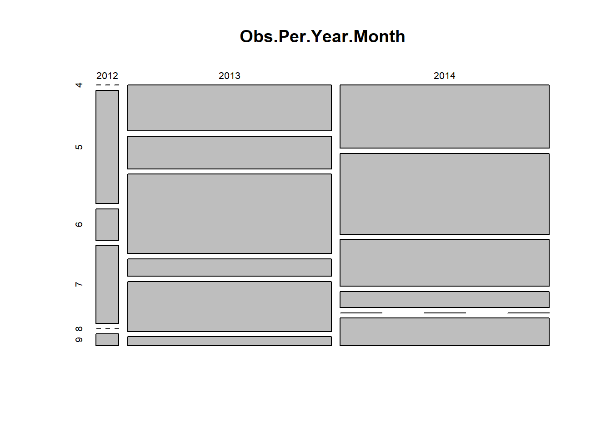
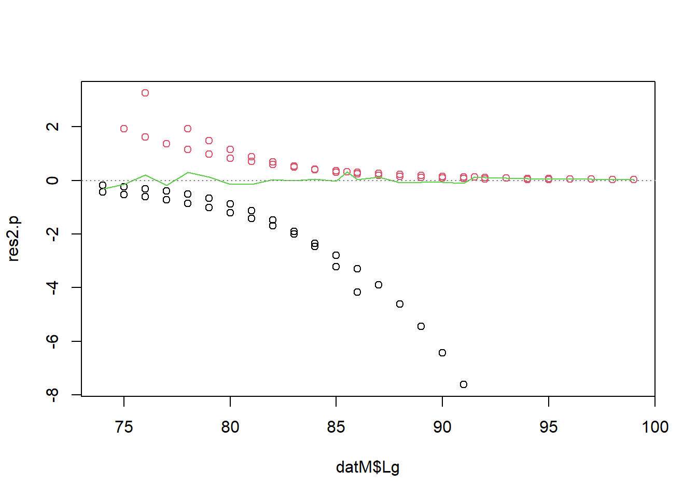

Exercise Solutions
Exercise: Binomial (Bernoulli) GLM - Maturity-length relationship in rays
1. The data for this exercise consist in records of Undulate Ray (Raja undulata) along the French Altlantic coast and the English Channel. The question of interest here is to estimate the size at which individuals become sexually mature. This is important in order to predict the dynamics of the population and possibly for setting fishing quotas. It has also been shown in other species that overfished stocks tend to mature earlier in response to the selection imposed by fishing mortality.
- Variables:
Lglength (cm). Individuals less than 74 cm were excluded from the dataSex: “F” or “M”.Area: “ATL” or “ECH” for Atlantic and English Channel, respectively.Month: numericYear: numericMature: “0” for immature and “1” for mature.
We will construct a model of the probability of being mature, to address the following questions:
- Primary research question:
- How does the probability of being mature change with body length?
- Secondary research questions:
- Does this maturity-length relationship differ between areas (possibly as a result of different fishing pressures)?
- Does this maturity-length relationship differ between sexes?
2. Import the data file ‘RayMaturity.csv’ into R. As in previous exercises, either create a new R script (perhaps call it GLM_RayBin) or continue with your previous R script in your RStudio Project.
dat<- read.csv("./data/RayMaturity.csv", stringsAsFactors= T)
str(dat)
## 'data.frame': 1148 obs. of 7 variables:
## $ X : int 127 128 129 130 131 132 133 134 135 136 ...
## $ Lg : num 74 75 78 79 81 81 81 81 82 83 ...
## $ Sex : Factor w/ 2 levels "F","M": 1 1 1 1 1 1 1 1 1 1 ...
## $ Area : Factor w/ 2 levels "ATL","ECH": 1 1 1 1 1 1 1 1 1 1 ...
## $ Month : int 4 4 4 4 4 4 4 4 4 4 ...
## $ Year : int 2013 2013 2013 2013 2013 2013 2013 2013 2013 2013 ...
## $ Mature: int 0 0 0 0 0 1 0 1 1 1 ...
3. Let’s first take a look at the structure of this dataframe, and do an initial data exploration. 0/1 data (Bernoulli) are more difficult than most to explore. We will start by looking for any correlation/data imbalance (different sample sizes between portions of a predictor variable) for the all predictors (for example Lg, Sex, and Area)
- Notes:
- One approach for data imbalance is to count the number of observations per categories of the predictors of interest.
table()is a useful way to count the number of observations per category or combinations of categories, e.g.Obs.Per.F1.F2<- table(Factor1, Factor2)stores the number of observations per category ofFactor1andFactor2in a tableplot(Obs.Per.F1.F2)returns a “mosaic plot” where the area of each rectangle is proportional to the count.
Below is an example with Year and Month (see the code). Use the same approach for other variables. For example, is there is an even representation of sexes in the two areas?
# count the number of observations per month, and per year:
table(dat$Month)##
## 4 5 6 7 8 9
## 253 294 300 98 114 89# majority of the data are from April-May-June
table(dat$Year)##
## 2012 2013 2014
## 60 537 551# count observations per year/month combination and represent as mosaicplot
Obs.Per.Year.Month<- table(dat$Year, dat$Month)
# See what's in the table:
Obs.Per.Year.Month##
## 4 5 6 7 8 9
## 2012 0 29 8 20 0 3
## 2013 105 75 182 40 114 21
## 2014 148 190 110 38 0 65# Year in rows, Months in columns
# mosaic plot (this is the default plot for a contingency table in R)
plot(Obs.Per.Year.Month)
# fewer observations in 2012 (column is narrow)
# variable sample size from each month from April to Sept (height / area of the squares varies)
# but overall a fairly "random" representation of all months across years,
# so should not be problematic
# (for example, an issue might arise if all observations from Spring
# came from one year and all Summer observations from a different
# year, hence not comparable maybe)Obs.Per.Sex.Area<- table(dat$Sex, dat$Area)
plot(Obs.Per.Sex.Area)
# most data are from males and from the English Channel
# we would thus expect to be able to estimate the effects for
# the males more precisely than for the females.
# if we include data from all sexes in the model and do not account
# for sex effects, the result would be biased towards males.
# Likewise for Area.
# Is length correlated with Month?
dat$fMonth<- factor(dat$Month)
boxplot(Lg ~ fMonth, data= dat)
# A little maybe, but not that clear. Shouldn't be a problemNext we look for factors affecting the probability of maturity. Which ones are continuous or categorical?
- Notes:
- The data are not probabilities of maturity, they are just 0 and 1’s. We can’t visualise probabilities of maturity unless we average the data for groups of observations
- For exploring the effect of discrete predictors on the probability of maturity (response), you may calculate mean maturity per category, which is the proportion of mature individuals:
bla<- tapply(dat$Mature, list(dat$FactorOfInterest), mean)and plot this usingbarplot(bla, type= "b", ylim= c(0, 1), xlab= "FactorOfInterest", ylab= "maturity") - For the effect of continuous predictors on the response, the best approach is to treat the continuous variable as discrete (using
as.factorfor example), for the data exploration.
Below is an example with Sex. Repeat with other relevant predictors.
# Maturity in relation to Sex
mean.per.Sex<- tapply(dat$Mature, list(dat$Sex), mean)
barplot(mean.per.Sex, ylim= c(0, 1),
xlab= "Sex", ylab= "proportion mature")
# Probability maybe higher in males?# Maturity in relation to Area
mean.per.Area<- tapply(dat$Mature, list(dat$Area), mean)
barplot(mean.per.Area, ylim= c(0, 1),
xlab= "Area", ylab= "proportion mature")
# Probability higher in the English Channel?
# Maturity in relation to length
mean.per.Lg<- tapply(dat$Mature, list(as.factor(dat$Lg)), mean)
barplot(mean.per.Lg, ylim= c(0, 1),
xlab= "Length class", ylab= "proportion mature")
# Probability increases massively with length, as expected
# Can we ignore the year effect?
mean.per.Year<- tapply(dat$Mature, list(dat$Year), mean)
barplot(mean.per.Year, ylim= c(0, 1),
xlab= "Length class", ylab= "proportion mature")
# not much going on, probably safe to ignore
# Can we ignore the month effect?
mean.per.Month<- tapply(dat$Mature, list(dat$Month), mean)
barplot(mean.per.Month, ylim= c(0, 1),
xlab= "Length class", ylab= "proportion mature")
# some trend here, not ideal given that most data are from April-May-June
# Maybe Month should be included
4. Time to fit a model to address some of the research questions. For simplicity, we will ignore Sex and Month for now, but if you wish, you can investigate them in your own time later. Because most of the data are males, first create a subset of the data with only the males data. For this new data set, specify a Binomial GLM looking at the effects of length and area, and whether the effect of length varies between areas (using glm() and the appropriate family argument). Hint: do you need to include an interaction term?
datM<- dat[dat$Sex == "M", ]
Mat1<- glm(Mature ~ Lg + Area + Lg:Area, family= binomial, data= datM)
5. Obtain summaries of the model output using the summary() function.
- How do you interpret each term?
- what is the
Intercept, and which categories does it refer to? - what is the
Lgeffect, and which category does it refer to? - what is the
AreaECHeffect? - what is the
Lg:AreaECHeffect, and which category does it refer to?
- what is the
summary(Mat1)
##
## Call:
## glm(formula = Mature ~ Lg + Area + Lg:Area, family = binomial,
## data = datM)
##
## Deviance Residuals:
## Min 1Q Median 3Q Max
## -2.8553 -0.2560 0.3349 0.5758 2.2134
##
## Coefficients:
## Estimate Std. Error z value Pr(>|z|)
## (Intercept) -41.97057 5.11871 -8.199 2.42e-16 ***
## Lg 0.52120 0.06303 8.269 < 2e-16 ***
## AreaECH 15.53175 5.73658 2.707 0.00678 **
## Lg:AreaECH -0.18606 0.07054 -2.638 0.00835 **
## ---
## Signif. codes: 0 '***' 0.001 '**' 0.01 '*' 0.05 '.' 0.1 ' ' 1
##
## (Dispersion parameter for binomial family taken to be 1)
##
## Null deviance: 1031.65 on 910 degrees of freedom
## Residual deviance: 693.39 on 907 degrees of freedom
## AIC: 701.39
##
## Number of Fisher Scoring iterations: 5
# "(Intercept)" is the predicted value on the link (logit) scale for
# Lg = 0, females (Sex= "F") on the Atlantic coast (Area= "ATL")
# "Lg" is the slope of Length for females on the Atlantic coast.
# Assumes a linear increase (on the logit scale)
# "AreaECH" is the estimated difference (on the logit scale) between
# the Channel and the Atlantic coast.
# Positive means higher odds of being mature in the Channel
# "Lg:AreaECH" is the difference between the slope of Length in the Channel
# compared to the slope of Length in the Atlantic.
# Negative means that the increase is slower in the Channel
# A mathematical description of the model
# (more or less how I would present it in the methods section of a paper):
# maturity ~ Bernoulli(p) or maturity ~ Binomial(N= 1, p)
# log(p / (1-p)) = -41.97 + 0.52*Length
# + 15.53 * AeraECH
# -0.19 * AeraECH * Length
# The coefficients are on the logit scale,
# so cannot be interpreted directly as probabilities.
# They are interpreted as changes in log-odds:
# For a given body length, a ray in the English Channel has
# log-odds increased by 15.53 compared to a ray in the Atlantic.
# This is equivalent to saying that the odds increase by exp(15.53).
# None of this is particularly intuitive, so we will mostly
# rely on predictions on the probability (response) scale
# for the interpretation of the model
6. Do you need to simplify the model? Use drop1 to find out, with the appropriate test distribution (Chi-squared).
drop1(Mat1, test= "Chisq")
## Single term deletions
##
## Model:
## Mature ~ Lg + Area + Lg:Area
## Df Deviance AIC LRT Pr(>Chi)
## <none> 693.39 701.39
## Lg:Area 1 701.26 707.26 7.875 0.005012 **
## ---
## Signif. codes: 0 '***' 0.001 '**' 0.01 '*' 0.05 '.' 0.1 ' ' 1
# the interaction of length by area is significant: nothing to simplify.
# out of interest, the total proportion of deviance explained is
(Mat1$null.deviance - Mat1$deviance) / Mat1$null.deviance
## [1] 0.3278893
# 33%, pretty good for a binomial model!
7. Let’s now produce plots to validate the model, using Pearson residuals and the usual model validation tools. Are they helpful?
par(mfrow= c(2, 2))
plot(Mat1) # not very useful
# to make sense of what we are seeing, we can add colors: red
# for residuals of mature individuals, black for residuals of immatures
plot(Mat1, col= datM$Mature + 1)
# Still not very telling
# let's plot against predictors:
res2.p<- resid(Mat1, type= "pearson")
par(mfrow= c(2, 2))
plot(res2.p ~ datM$Sex) # boxplot (x axis is a factor)
plot(res2.p ~ datM$Area) # boxplot
plot(res2.p ~ datM$Lg, col= datM$Mature + 1) # scatterplot
# Can't see anything useful.
8. These plots are not very useful, because the data are 0/1 and thus the individual residuals (difference between the 0/1 observations and continuous fitted values) follow weird patterns. But we can actually get a bit further by taking the mean of groups of residuals (groups being the levels of a predictor). The idea is that if there is no trend in the residuals, these means should be randomly distributed around zero (and ideally, close to zero as well). The binnedplot() function in the arm package does exactly that. for numerical variables, binnedplot() splits the variable into discrete bins, and calculates the mean of the residuals for each bin. binnedplot() requires numerical variables: binnedplot(x= MyContinuousPredictor, y= MyResiduals, xlab= "MyContinuousPredictor", nclass= NumberOfBinsWanted). If needed you can convert categorical predictors into numerical: binnedplot(x= as.numeric(MyFactor), y= MyResiduals, xlab= "MyFactor").
Here is an example using binnedplot with Month (even if it is not in the model, but to see if it should). You can try yourself with area, and body length.
library(arm)
par(mfrow= c(1, 1))
binnedplot(x= datM$Month, y= res2.p, xlab= "Month", nclass = 6)
# nclass= 6 because we have 6 months in the dataWe want residuals to be close to zero, but how far is too far?
binnedplotconveniently adds expected limits (grey lines), beyond which the the fit of the model is questionable. Here the residuals per month are close to the limit, and even outside for August: includingMonthwould probably improve the model a bit.
par(mfrow= c(2, 2))
binnedplot(x= as.numeric(datM$Area), y= res2.p, xlab= "Area")
binnedplot(x= datM$Month, y= res2.p, xlab= "Month", nclass = 6)
# nclass= 6 because we have 6 months in the data
binnedplot(x= datM$Lg, y= res2.p, xlab= "Length", nclass= 20)
# could use more or less than 20
9. Are you happy with the diagnostic plots?
# things look fine with Area, with residuals well within
# the expected limits (grey lines)
# Same with length, except for the extreme lengths,
# for which the residuals are slightly too low and too high, respectively.
# We'll see in the graphs of the predictions if this is a big concern.
10. Assuming that the model is fine as it is, let’s plot the predictions of the model in relation to length Lg for the Channel and the Atlantic coast. For the sake of understanding how the models works, let’s start with predictions on the link scale type= "link". What do these numbers represent?
# create a sequence of increasing lengths
Seq.Length<- 74:100
# PREDICTIONS FOR MALES ON THE ATLANTIC COAST
dat.new.ATL<- data.frame(Sex= "M", Lg= Seq.Length, Area= "ATL")
Mat1.pred.ATL<- predict(Mat1, dat.new.ATL, type= "link", se.fit= T)
# Add them to the prediction data frame, to keep the workspace tidy
dat.new.ATL$fit<- Mat1.pred.ATL$fit
# Same approach for MALES IN THE ENGLISH CHANNEL
dat.new.ECH<- data.frame(Sex= "M", Lg= Seq.Length, Area= "ECH")
Mat1.pred.ECH<- predict(Mat1, dat.new.ECH, type= "link", se.fit= T)
dat.new.ECH$fit<- Mat1.pred.ECH$fit
# PLOTTING THE TWO AREAS TOGETHER
par(mfrow= c(1, 1))
# plot predictions for Atlantic coast
plot(x= Seq.Length, y= dat.new.ATL$fit,
type= "l", lwd= 2, xlab= "Length (cm)",
ylab= "Fitted value (link scale)",
main= "Predictions for Males", col= "navy")
# Add predictions for English Channel
lines(x= Seq.Length, y= dat.new.ECH$fit, lwd= 2, col= "cyan")
legend(x= 87, y= 0.3, legend= c("Atlantic coast", "English Channel"),
lwd= 2, col= c("navy", "cyan"), bty= "n")
The predictions on the link scale are linear, as they should be. But they represent the log-odds of being mature: # For a body length of 75 cm for example, a ray in the English Channel has log-odds of being mature of about -1.6: not exactly the most intuitive thing to interpret!
11. The default link function for the binomial GLM is the logit function, log(p/(1-p)). And the fitted values can be transformed using exp(fitted.value) / (1 + exp(fitted.value)). You can use this formula to back-transform your predictions, but this is a bit cumbersome to write. R provides the function plogis which does the same calculation. Use plogis or the back-transformation formula to compute the predicted values on the probability (response) scale, and plot them against length, for each area.
# create a sequence of increasing lengths
Seq.Length<- 74:100
# PREDICTIONS FOR MALES ON THE ATLANTIC COAST
dat.new.ATL<- data.frame(Sex= "M", Lg= Seq.Length, Area= "ATL")
Mat1.pred.ATL<- predict(Mat1, dat.new.ATL, type= "link", se.fit= T)
# Convert predictions to the response (probability) scale.
# And add them to the prediction data frame to keep the workspace tidy
dat.new.ATL$fit.resp<- exp(Mat1.pred.ATL$fit)/(1+exp(Mat1.pred.ATL$fit))
# or
dat.new.ATL$fit.resp<- plogis(Mat1.pred.ATL$fit)
# PREDICTIONS FOR MALES IN THE ENGLISH CHANNEL
dat.new.ECH<- data.frame(Sex= "M", Lg= Seq.Length, Area= "ECH")
Mat1.pred.ECH<- predict(Mat1, dat.new.ECH, type= "link", se.fit= T)
dat.new.ECH$fit.resp<- plogis(Mat1.pred.ECH$fit)
# PLOTTING IT TOGETHER
par(mfrow= c(1, 1))
# plot predictions for Atlantic coast
plot(x= Seq.Length, y= dat.new.ATL$fit.resp,
type= "l", lwd= 2, xlab= "Length (cm)",
ylab= "Fitted probability", ylim= c(0, 1),
main= "Predictions for Males", col= "navy")
# Add predictions for English Channel
lines(x= Seq.Length, y= dat.new.ECH$fit.resp, lwd= 2, col= "cyan")
legend(x= 87, y= 0.3, legend= c("Atlantic coast", "English Channel"),
lwd= 2, col= c("navy", "cyan"), bty= "n")
Optionally, you may add the confidence intervals around the predictions (this would be highly recommended in a report).
- Calculation of confidence intervals:
- As for the Poisson GLM, you will need to calculate the lower and upper bounds of the 95% CI on the link scale (same method)
- Only then, convert these confidence limits to the response scale, using
plogis(different from the Poisson GLM, since the link function is different)
# create a sequence of increasing lengths
Seq.Length<- 74:100
# PREDICTIONS FOR MALES ON THE ATLANTIC COAST
dat.new.ATL<- data.frame(Sex= "M", Lg= Seq.Length, Area= "ATL")
Mat1.pred.ATL<- predict(Mat1, dat.new.ATL, type= "link", se.fit= T)
# Convert predictions to the response (probability) scale.
# And add them to the prediction data frame to keep the workspace tidy
dat.new.ATL$fit.resp<- exp(Mat1.pred.ATL$fit)/(1+exp(Mat1.pred.ATL$fit))
# or dat.new.ATL$fit.resp<- plogis(Mat1.pred.ATL$fit)
# Calculate the confidence limits on the link scale and transform onto the response scale:
# lower 95% CI
dat.new.ATL$LCI<- plogis(Mat1.pred.ATL$fit - 1.96*Mat1.pred.ATL$se.fit)
# upper 95% CI
dat.new.ATL$UCI<- plogis(Mat1.pred.ATL$fit + 1.96*Mat1.pred.ATL$se.fit)
# PREDICTIONS FOR MALES IN THE ENGLISH CHANNEL
dat.new.ECH<- data.frame(Sex= "M", Lg= Seq.Length, Area= "ECH")
Mat1.pred.ECH<- predict(Mat1, dat.new.ECH, type= "link", se.fit= T)
dat.new.ECH$fit.resp<- plogis(Mat1.pred.ECH$fit)
dat.new.ECH$LCI<- plogis(Mat1.pred.ECH$fit - 1.96*Mat1.pred.ECH$se.fit)
dat.new.ECH$UCI<- plogis(Mat1.pred.ECH$fit + 1.96*Mat1.pred.ECH$se.fit)
# PLOTTING IT ALL TOGETHER
par(mfrow= c(1, 1))
# plot predictions for Atlantic coast
plot(x= Seq.Length, y= dat.new.ATL$fit.resp,
type= "l", lwd= 2, xlab= "Length (cm)",
ylab= "Fitted probability", ylim= c(0, 1),
main= "Predictions for Males", col= "navy")
# Add the upper and lower confidence limits of predictions
lines(x= Seq.Length, y= dat.new.ATL$UCI, lty= 3, col= "navy")
lines(x= Seq.Length, y= dat.new.ATL$LCI, lty= 3, col= "navy")
# Add predictions for English Channel
lines(x= Seq.Length, y= dat.new.ECH$fit.resp, lwd= 2, col= "cyan")
# Add the upper and lower confidence limits
lines(x= Seq.Length, y= dat.new.ECH$UCI, lty= 3, col= "cyan")
lines(x= Seq.Length, y= dat.new.ECH$LCI, lty= 3, col= "cyan")
legend(x= 87, y= 0.3, legend= c("Atlantic coast", "English Channel"),
lwd= 2, col= c("navy", "cyan"), bty= "n")
12. How satisfied are you with the model, and with all the assumptions being met? What have you learned from it, with respect to the initial aims of the study?
# The model seems to fit the data satisfortorily, base on the validation plots.
# Ignoring the effect of Month may bias the results slightly,
# but hopefully not much (if you wish you could check this yourself)
# With respect to the large residuals at extreme body lengths,
# we can see on the graphs that the predicted probabilities are already
# very high and low, respectively (close to 0 or 1).
# Therefore, they wouldn't change very much even if we improved the model.
# So, no much concern here.
# We infer from the graph of the predictions that:
# a minority of males is mature at 75 cm
# almost all males are mature after 85 cm
# 50% of males have reached maturity at a length around
# 78-80 cm, however maturity is reached
# earlier in the Channel than on the Atlantic coastal area.
# We could speculate that the difference in the rate of maturation
# between the two areas is due to a higher fishing pressure on the
# species in the English Channel. This is correlative.
# More research needed if we want to establish the cause!
End of the Binomial (Bernoulli) GLM exercise - Maturity-length relationship in rays
Note: If you cannot install the arm package and access its binnedplot function, you can use this “DIY” alternative instead, in the code chunk below. The green line shows the mean of the residuals for each value or bin of the X variable.
par(mfrow= c(1, 1))
# plot the residuals against length
plot(res2.p ~ datM$Lg, col= datM$Mature + 1)
# get the mean of the residuals for each 1 cm of length
lg.means<- tapply(res2.p, list(datM$Lg), mean)
# convert ordered bin labels into numbers (1 to 365)
lg.vals<- as.numeric(names(lg.means))
lines(lg.means ~ lg.vals, col= 3)
abline(h= 0, lty= 3, col= grey(0.5))
Optional. If you are curious about the Sex effect, you can add it in the model. Note that as well as differences between areas, there may be an interaction between length and sex (Males and Females reach maturity at different rates). Simplify the model if necessary, validate, and plot the predictions for all areas and sexes. Remember to use the original, full data set with the females in!
Mat2<- glm(Mature ~ Lg + Area + Sex + Lg:Area + Lg:Sex, family= binomial, data= dat)
drop1(Mat2, test= "Chisq")
## Single term deletions
##
## Model:
## Mature ~ Lg + Area + Sex + Lg:Area + Lg:Sex
## Df Deviance AIC LRT Pr(>Chi)
## <none> 807.81 819.81
## Lg:Area 1 814.10 824.10 6.2890 0.01215 *
## Lg:Sex 1 810.23 820.23 2.4199 0.11980
## ---
## Signif. codes: 0 '***' 0.001 '**' 0.01 '*' 0.05 '.' 0.1 ' ' 1
# interation with Sex not significant -> simplify
Mat3<- glm(Mature ~ Lg + Area + Sex + Lg:Area, family= binomial, data= dat)
drop1(Mat3, test= "Chisq")
## Single term deletions
##
## Model:
## Mature ~ Lg + Area + Sex + Lg:Area
## Df Deviance AIC LRT Pr(>Chi)
## <none> 810.23 820.23
## Sex 1 857.44 865.44 47.208 6.384e-12 ***
## Lg:Area 1 816.44 824.44 6.206 0.01273 *
## ---
## Signif. codes: 0 '***' 0.001 '**' 0.01 '*' 0.05 '.' 0.1 ' ' 1
# All effects significant -> noting to drop.
# I skip the model validation here, as it is quite similar to previously
# PREDICTIONS
# create a sequence of increasing lengths
Seq.Length<- 74:100
# PREDICTIONS FOR MALES ON THE ATLANTIC COAST
dat.new.ATL.M<- data.frame(Sex= "M", Lg= Seq.Length, Area= "ATL")
Mat3.pred.ATL.M<- predict(Mat3, dat.new.ATL, type= "link", se.fit= T)
# fitted values on the response scale:
dat.new.ATL.M$fit.resp<- plogis(Mat3.pred.ATL.M$fit)
# lower 95% CI
dat.new.ATL.M$LCI<- plogis(Mat3.pred.ATL.M$fit - 1.96*Mat3.pred.ATL.M$se.fit)
# upper 95% CI
dat.new.ATL.M$UCI<- plogis(Mat3.pred.ATL.M$fit + 1.96*Mat3.pred.ATL.M$se.fit)
# PREDICTIONS FOR MALES IN THE ENGLISH CHANNEL
dat.new.ECH.M<- data.frame(Sex= "M", Lg= Seq.Length, Area= "ECH")
Mat3.pred.ECH.M<- predict(Mat3, dat.new.ECH.M, type= "link", se.fit= T)
dat.new.ECH.M$fit.resp<- plogis(Mat3.pred.ECH.M$fit)
dat.new.ECH.M$LCI<- plogis(Mat3.pred.ECH.M$fit - 1.96*Mat3.pred.ECH.M$se.fit)
dat.new.ECH.M$UCI<- plogis(Mat3.pred.ECH.M$fit + 1.96*Mat3.pred.ECH.M$se.fit)
# PREDICTIONS FOR FEMALES ON THE ATLANTIC COAST
dat.new.ATL.F<- data.frame(Sex= "F", Lg= Seq.Length, Area= "ATL")
Mat3.pred.ATL.F<- predict(Mat3, dat.new.ATL.F, type= "link", se.fit= T)
dat.new.ATL.F$fit.resp<- exp(Mat3.pred.ATL.F$fit)/(1+exp(Mat3.pred.ATL.F$fit))
dat.new.ATL.F$LCI<- plogis(Mat3.pred.ATL.F$fit - 1.96*Mat3.pred.ATL.F$se.fit)
dat.new.ATL.F$UCI<- plogis(Mat3.pred.ATL.F$fit + 1.96*Mat3.pred.ATL.F$se.fit)
# PREDICTIONS FOR FEMALES IN THE ENGLISH CHANNEL
dat.new.ECH.F<- data.frame(Sex= "F", Lg= Seq.Length, Area= "ECH")
Mat3.pred.ECH.F<- predict(Mat3, dat.new.ECH.F, type= "link", se.fit= T)
dat.new.ECH.F$fit.resp<- plogis(Mat3.pred.ECH.F$fit)
dat.new.ECH.F$LCI<- plogis(Mat3.pred.ECH.F$fit - 1.96*Mat3.pred.ECH.F$se.fit)
dat.new.ECH.F$UCI<- plogis(Mat3.pred.ECH.F$fit + 1.96*Mat3.pred.ECH.F$se.fit)
## PLOTTING MALES AND FEMALES TOGETHER:
# PLOTTING MALES
par(mfrow= c(1, 1))
plot(x= Seq.Length, y= dat.new.ATL.M$fit.resp,
type= "l", lwd= 2, xlab= "Length (cm)",
ylab= "Fitted probability", ylim= c(0, 1),
main= "Predictions for all groups", col= "navy")
lines(x= Seq.Length, y= dat.new.ATL.M$UCI, lty= 3, col= "navy")
lines(x= Seq.Length, y= dat.new.ATL.M$LCI, lty= 3, col= "navy")
lines(x= Seq.Length, y= dat.new.ECH.M$fit.resp, lwd= 2, col= "cyan")
lines(x= Seq.Length, y= dat.new.ECH.M$UCI, lty= 3, col= "cyan")
lines(x= Seq.Length, y= dat.new.ECH.M$LCI, lty= 3, col= "cyan")
# ADDING FEMALES TO THE PLOT
# plot predictions for Atlantic coast
lines(x= Seq.Length, y= dat.new.ATL.F$fit.resp, lwd= 2, col= "darkgreen")
# Add upper and lower prediction confidence limits
lines(x= Seq.Length, y= dat.new.ATL.F$UCI, lty= 3, col= "darkgreen")
lines(x= Seq.Length, y= dat.new.ATL.F$LCI, lty= 3, col= "darkgreen")
# Add predictions for English Channel
lines(x= Seq.Length, y= dat.new.ECH.F$fit.resp, lwd= 2, col= "green")
# Add upper and lower prediction confidence limits
lines(x= Seq.Length, y= dat.new.ECH.F$UCI, lty= 3, col= "green")
lines(x= Seq.Length, y= dat.new.ECH.F$LCI, lty= 3, col= "green")
legend(x= 87, y= 0.4, legend= c("Males Atlantic coast", "Males English Channel", "Females Atlantic coast", "Females English Channel"),
lwd= 2, col= c("navy", "cyan", "darkgreen", "green"), bty= "n")
What can we infer from this, with respect to the initial aims of the study?
# The model seems to be fitting the data satisfactorily.
# We infer from the graph of the predictions that:
# As previously,
# a minority of males is mature at 75 cm
# almost all males are mature at 85 cm
# 50% of males have reached maturity at a length around
# 78-80 cm, however maturity is reached
# earlier in the Channel than on the Atlantic coastal area.
# In addition,
# Females mature at a larger length than males:
# a minority of females is mature at 75 cm
# almost all females are mature at 90 cm
# 50% of females have reached maturity at a length around
# 83 cm, without a clear difference between the Channel
# and the Atlantic coastal area (but note that the confidence
# intervals are wider than males, due to the smaller sample size).
# We could speculate that the difference in the rate of maturation
# between the two areas is due to a higher fishing pressure on the
# species in the English Channel, although the pattern found in
# females does not support this so clearly. More data and research needed?